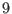

Un trap est un « piège » pour « attraper » un signal. Il est alors possible de lui associer l'exécution de quelques actions.
Un trap est une façon d'interrompre le déroulement normal d'un processus pour répondre à un signal en exécutant une action prévue à cet effet. Cette action est appelée « action de gestion d'interruption » 12.1. Elle ne sera exécutée que dans le cas où une interruption spécifique surviendrait. Il est possible d'avoir plusieurs actions distinctes en réponse à plusieurs signaux distincts.
Le signal  correspond à l'interruption absolue. Il ne pourra pas être ignoré ni trappé comme les autres.